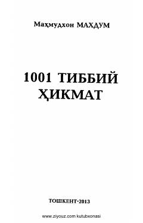

1TQadimiy sharq tabobati va tibbiy hikmatlar to'plami.
Mazkur kitob sharqshunos olim Mahmudxon Maxdum tomonidan yozilgan bo'lib, unda qadimiy tabobat tarixiga oid nodir asarlar va forsiy tildagi tibbiy hikmatlar o'zbek tiliga tarjima qilib berilgan. Ilmiy-ommabop nashr qadimiy tabobat bilan qiziquvchilar, shifokorlar va tibbiyot talabalari uchun mo'ljallangan.